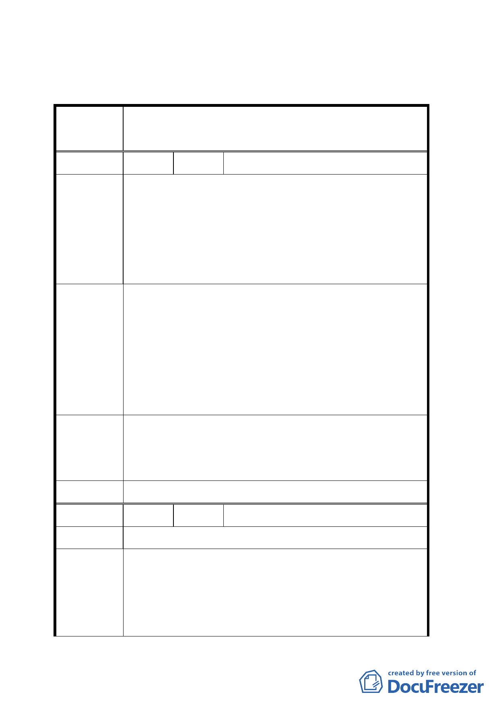

臺北市都市計畫委員會公民或團體所提意見綜理表
變更臺北市文山區原義芳化工廠附近地區都市計畫
案名
案
編 號 １ 陳情人 余鴻儒里長等四百五十人
1.反對縮減原 92 年 10 月市政說明會規模之承諾。
2.需同步變更山坡地為公園用地。
陳 情 理 由 3.入口原清潔隊停車場用地同步變更為公園用地。
4.反對割地賣地縮減建設規模此塊地平地部分已經不大
了，景美一代人口數眾多恐不敷使用。
1.義芳廠址正後方山坡地同步規劃登山休閒公園。
2.墳墓區山坡地列為第二通檢計畫。
3.建構多功能運動公園籃球場、網球場、羽球場、游泳池、
建議辦法
跑道、綠化森林、兒童遊戲場等親子公園。
5.地下可設停車場作長遠規劃。
6.經費逐步規劃請中央補助。
1.有關北側第二種住宅區變更為公園之規劃，請市府於兩
專案小組審
個月內以另案辦理個案變更方式處理。
查結論
2 設計及經費來源相關建議，留供公園處規劃設計參考。
委員會決議 同專案小組審查結論。
編 號 ２ 陳情人 發展局整理說明會意見
陳情理由
1.市有土地全部規劃為公園用地，不應保留部分住宅區作
為挹注開闢經費。
建議辦法
2.忠勤山莊現所在之住宅應予保留。
3.環保局資源回收站儘速遷移。
一六